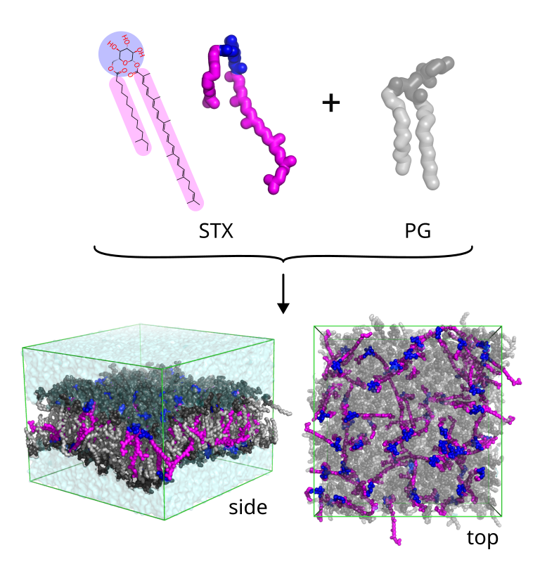
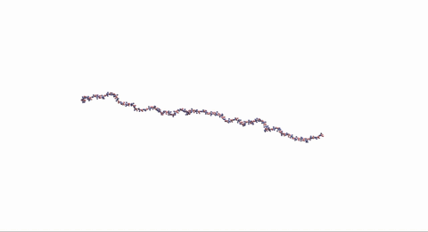
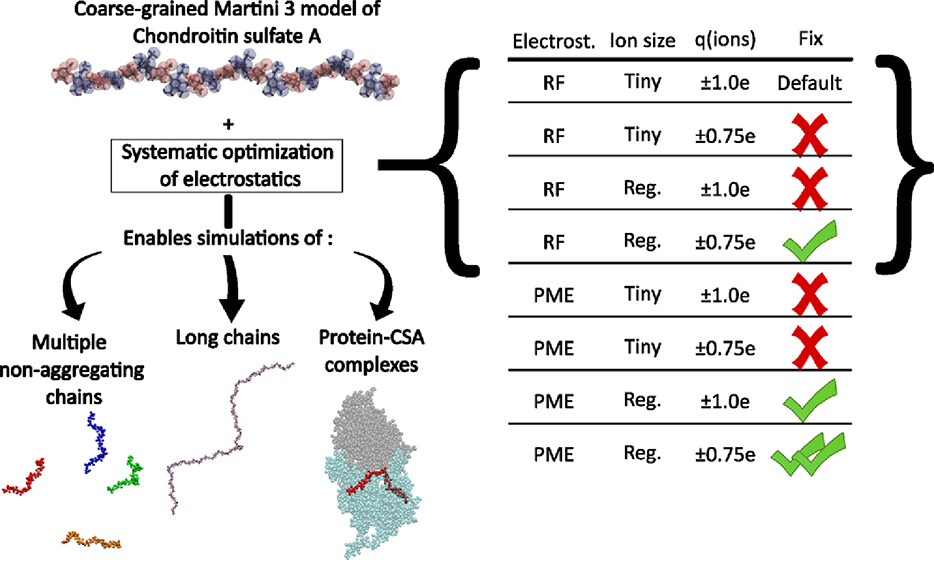
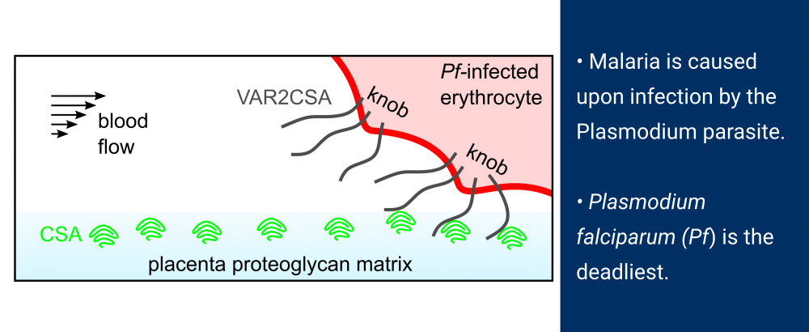
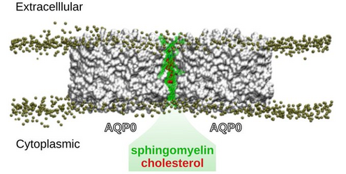
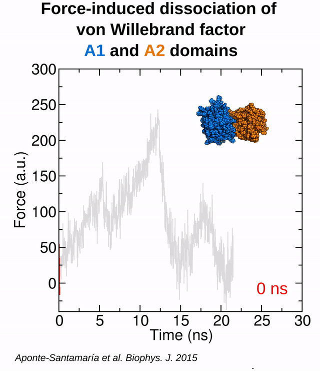

Gallery
For usage of this material please reference the original publication.
The S. aureus pigment staphyloxanthin (STX) modifies the structure of PG lipid bilayers

Read more: Figueroa Blanco et al. Biorxiv (2026).
Dynamics of chondroitin sulfate A

\(\Downarrow\) after systematic optimization of electrostatics

Read more and full resolution movie: Greicius et al. JCTC. 22(5):2622–2634 (2026).
IM30 coiled-coil region binds to negatively-charged (DOPG) and not to neutral (POPC) lipid bilayers

Read more: Schlösser et al. Protein Science. ;34(12):e70387 (2025).
Dynamics of the human outer kinetochore hub

Read more: Polley et al. NSMB. (2024).
Force-controlled valency of the malaria adhesin VAR2CSA

\(\Downarrow\) Force-induced opening of the VAR2CSA core region.

Read more: Roessner et al. PLoS Comp Biol. 19: e1011726 (2023).
Role of cholesterol in the formation of 2D AQP0 arrays in lens membranes

Read more:
Chiu, Orjuela et al. eLife. 12:RP90851 (2023). Reviewed Preprint.
Force-induced dissociation of von Willebrand factor domains

Read more: Aponte-Santamaría et al. Biophys. J. 108: 2312-2321 (2015).
Von Willebrand factor A2 domain dynamics